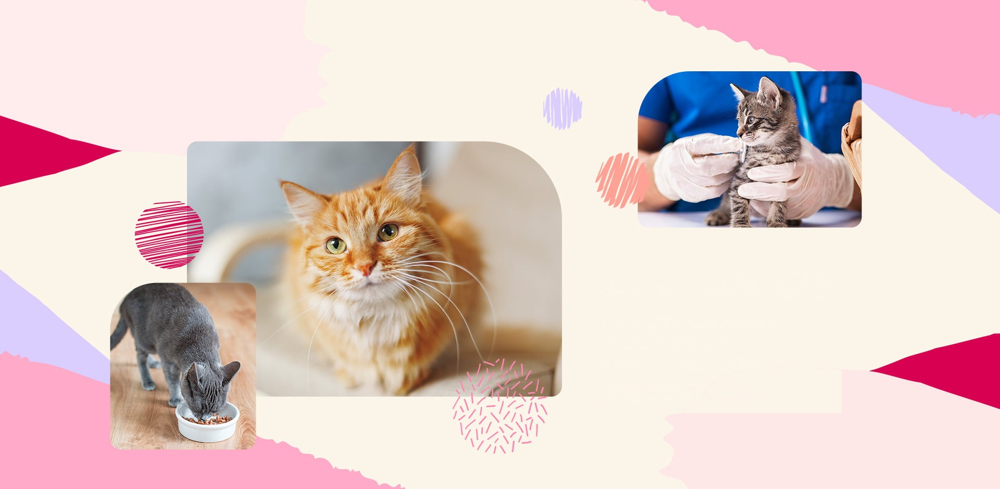
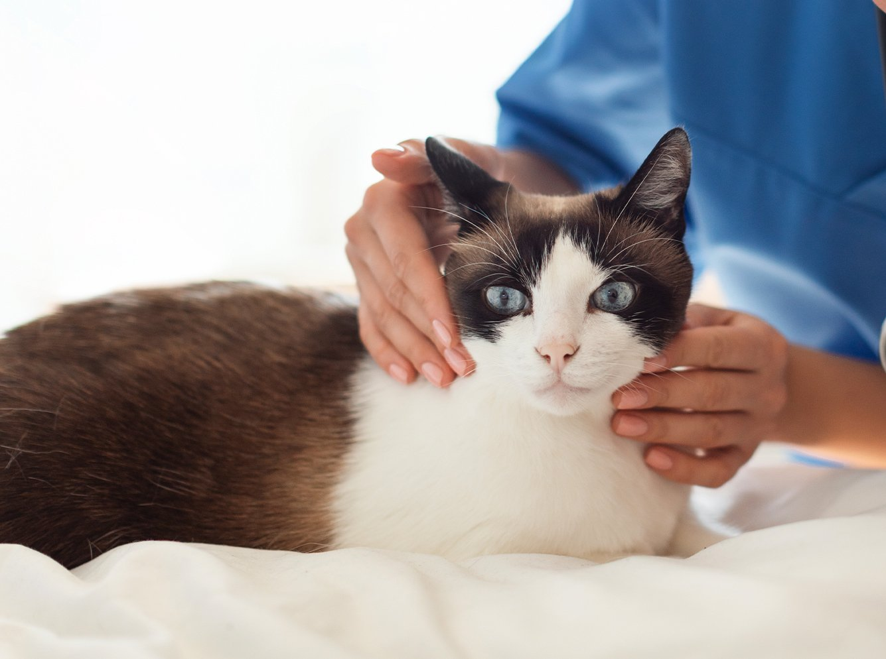
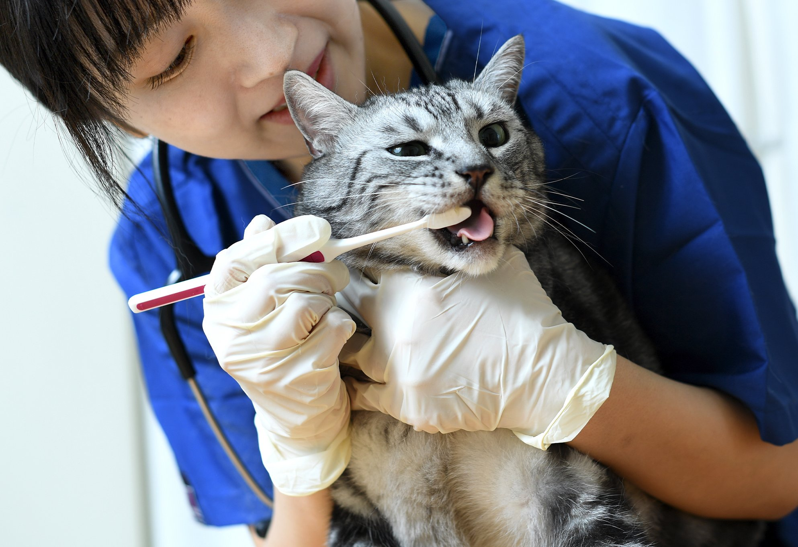

わたしのネコのクリニックは、完全ネコ専門のクリニックを直営で運営しています。猫専用に設計した環境で、猫ちゃんとそのご家族が安心して通える動物病院を目指します。

猫ちゃんが安心して通院できるように、猫ちゃんだけの空間を作りました。待合室と診察室は猫ちゃん専用です。また、緊張しやすい猫ちゃんも安心しやすくなるように、診察室内には猫ちゃんの匂いフェロモンも完備しています。

猫ちゃんは病気を上手に隠してしまう生き物です。気が付いたら病気が進行していたということをできるだけ減らすために、年に1回（シニアの子は年に2回）の定期健康診断を受けていただいています。猫ちゃんの健康を飼い主様と一緒に守ります。

猫ちゃんは病気を隠すのが上手な傾向にあり、特に慢性腎臓病や甲状腺機能亢進症などは初期症状が分かりにくく、注意が必要です。私たちは猫ちゃんと飼い主様がより長く一緒に過ごせるように、予防医療に力を入れています。
健康診断は予防医療の一つで、潜在的な問題を早期に発見し、適切な治療や予防策を講じるのに役立ちます。明らかな症状が出る前に定期的に健康診断を受診しましょう。

猫ちゃんの歯周病は、口腔内細菌が引き起こす病気で、歯垢の中に多く存在します。人と同じようにデンタルケアで、口腔内を清潔に保つことが大切です。
猫ちゃんは口腔環境から歯石が形成されやすく、柔らかい食事では歯垢が溜まりやすいです。全身の健康にも悪影響をもたらす歯周病は、2〜3歳以上の猫ちゃんの約8割に見られるという報告があり、若いうちからの歯石除去が毎日の健康を守る鍵となります。
各院の診療時間・ご予約方法は、開院に向けて決定次第ご案内いたします。